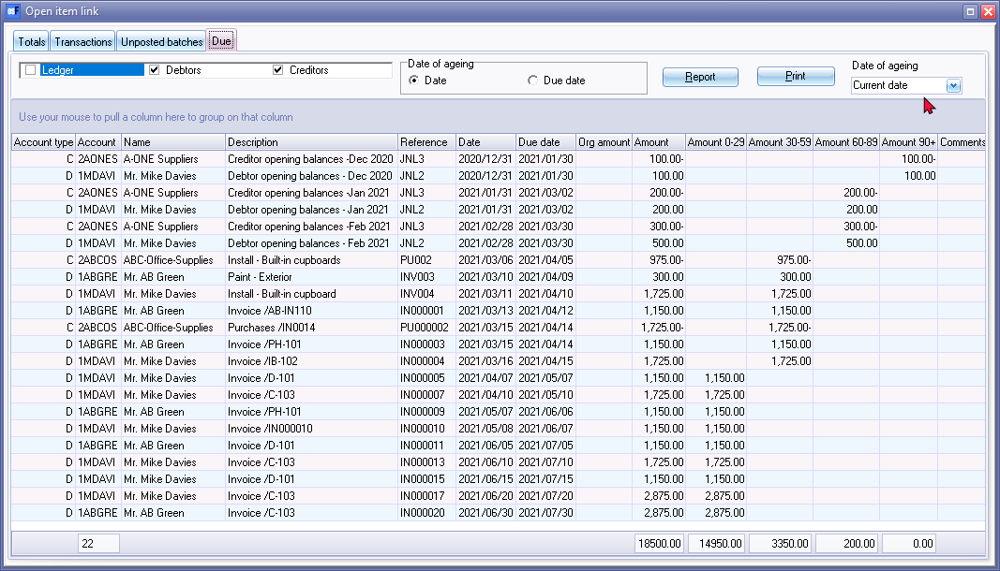
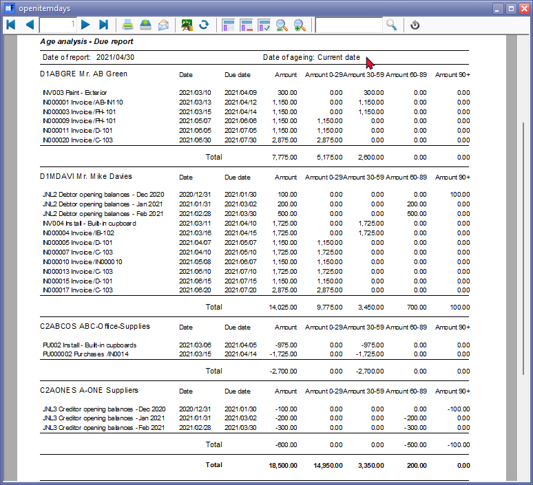
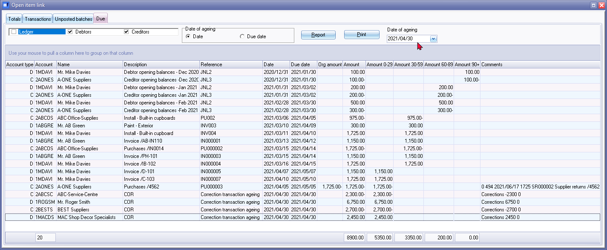
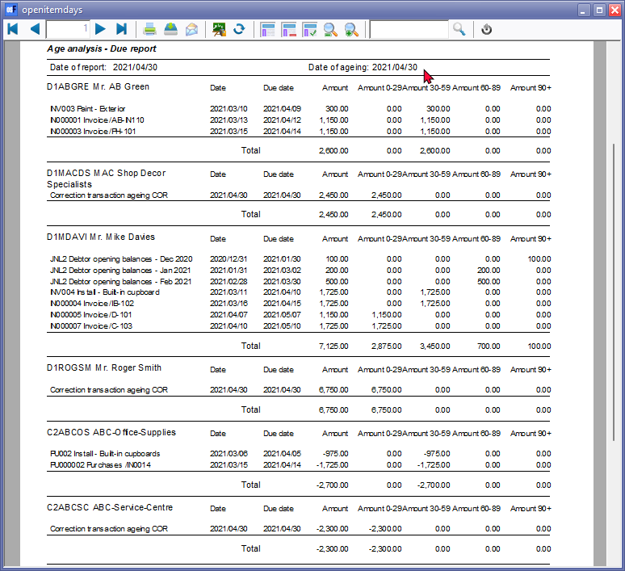
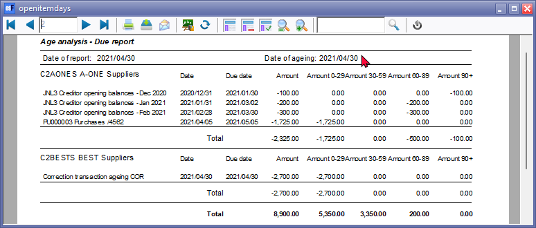

Open item link - Due tab
The Due tab will list all transactions for all open item accounts (i.e. ledger, debtors and creditors), which is set as open item accounts.
The transaction or outstanding transaction amounts are added in columns based on the number of days (0-29 days, 30-59 days, 60-89 days and +90 days).
You may to view and generate the report for a selected date options:
- Date of ageing - Select the date or due date option. The default is "Date of ageing" is the "Current date" (which is the date of your operating system). This report will include all outstanding transactions of only the open item accounts, for selected account types.
- Date of ageing - Select a specific date of the ageing to include in the report. This report will include all outstanding transactions of all accounts, including those non-open item accounts, for selected account types.
|
|
You may click on Age analysis icon on the Reports ribbon to access this Due tab. |

Date of ageing - Current date
To generate and print ageing report for the current date:
- Select Open item link (Default ribbon).
- Click on Due tab.

- Select the account type (i.e. ledger, debtors and creditors) to generate the Age analysis report for a specific account type.
- Date of ageing - Select the date or due date option. The default is "Date of ageing" is the "Current date" (which is the date of your operating system).
- Click on the Print button to print the "opendays" report.

|
|
Only the transactions of accounts set as open item accounts will be included in this report. |

Date of ageing - Selected date
To generate and print ageing report for a selected date:
- Select Open item link (Default ribbon).
- Click on Due tab.

- Select the account type (i.e. ledger, debtors and creditors) to generate the Age analysis report for a specific account type.
- Date of ageing - The default is "Date of ageing" is the "Current date" (which is the date of your operating system). Select a specific date of the ageing.
|
|
In this example, the date of ageing is set to 30 April 2021. "Correction transaction ageing COR" will automatically be generated to include the outstanding transactions of all accounts for selected account types. The "Correction transaction ageing COR" message, is only displayed for transactions of non-open item accounts. |
- Click on the Print button to print the "opendays" report.
In this example, the date of ageing is set to 30 April 2021.
Page 1 -

Page 2 -
